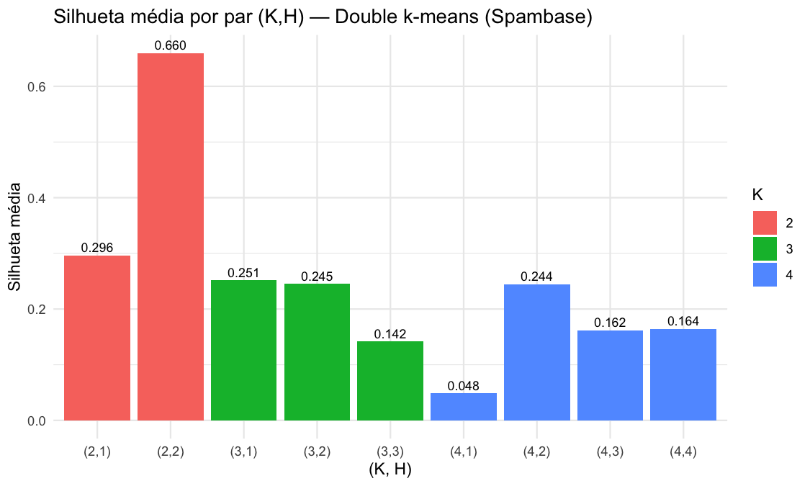
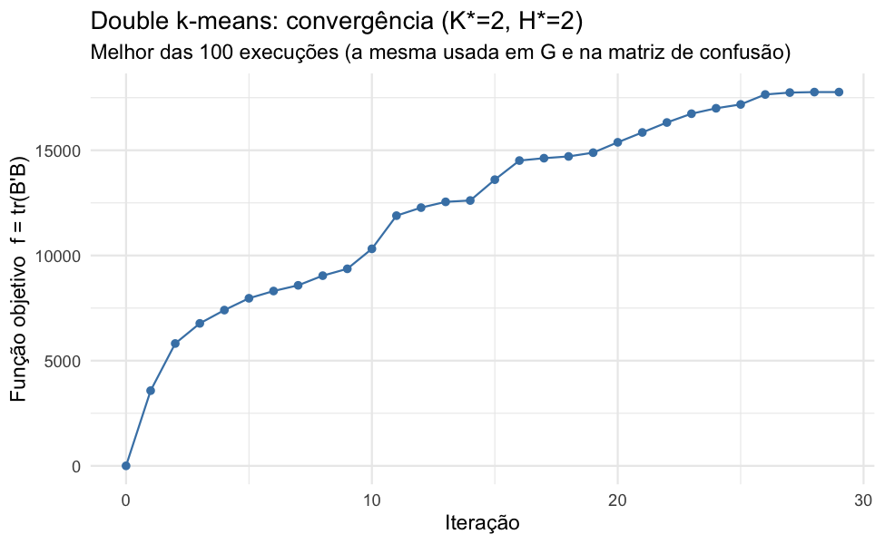

Classificação simultânea de objetos (e-mails) e variáveis (atributos léxicos) via double k-means (Vichi, 2001), implementado do zero em R (validado contra o pacote drclust). Busca em grade sobre K ∈ {2,3,4} blocos de e-mails e H ∈ {1,…,K} blocos de variáveis, 100 reinícios aleatórios por par.
Para cada par o algoritmo é executado com 100 inicializações aleatórias e fica a de maior função objetivo f = tr(B'B) (variância explicada pelos blocos). A silhueta média (Sil) foi calculada sobre a partição de objetos resultante, na mesma matriz padronizada usada no algoritmo.
| K | H | f = tr(B'B) | % var. explicada | Execuções no melhor f | f (drclust) | Sil média |
|---|---|---|---|---|---|---|
| 2 | 1 | 5 742,00 | 2,19% | 100/100 | 5 742,00 | 0,2961 |
| 2 | 2 | 17 766,44 | 6,78% | 5/100 | 17 766,44 | 0,6596 |
| 3 | 1 | 7 841,28 | 2,99% | 100/100 | 7 841,28 | 0,2515 |
| 3 | 2 | 22 878,37 | 8,73% | 5/100 | 22 830,25 | 0,2454 |
| 3 | 3 | 27 817,17 | 10,61% | 8/100 | 27 817,15 | 0,1419 |
| 4 | 1 | 8 976,37 | 3,42% | 100/100 | 8 976,37 | 0,0484 |
| 4 | 2 | 28 899,42 | 11,02% | 1/100 | 28 892,02 | 0,2444 |
| 4 | 3 | 33 733,22 | 12,87% | 22/100 | 33 733,22 | 0,1620 |
| 4 | 4 | 35 069,25 | 13,38% | 1/100 | 35 163,28 | 0,1642 |

Comparando a partição de objetos obtida (K*=2) com o rótulo a priori spam/não-spam:
Comentário. O ARI é praticamente nulo (levemente negativo), ou seja, a concordância entre a partição do double k-means e o rótulo de spam não é melhor do que o esperado ao acaso.
A causa fica evidente na matriz de confusão abaixo: o cluster de tamanho 2 encontrado não separa spam de não-spam — ele isola 34 e-mails com valores extremos (outliers) em um dos blocos de variáveis, enquanto o outro cluster (4567 e-mails) mantém praticamente a mesma proporção de spam do conjunto inteiro (1813/4567 ≈ 39,7%, contra 1813/4601 ≈ 39,4% no total). A silhueta favorece essa solução porque o cluster minoritário é geometricamente muito bem separado — não porque ela captura o fenômeno "spam". Isso ilustra um risco conhecido de escolher K por índices internos (como a silhueta) sobre dados brutos padronizados e assimétricos (frequências de palavras/caracteres, capital_run_length_*): o ótimo geométrico pode não coincidir com o rótulo semântico de interesse.
| Var-clust 1 | Var-clust 2 | ||
|---|---|---|---|
| Obj-clust 1 | (n=34) | 6,860 | −0,144 |
| Obj-clust 2 | (n=4567) | −0,051 | 0,001 |
| Não-spam (0) | Spam (1) | |
|---|---|---|
| Cluster 1 (n=34) | 34 | 0 |
| Cluster 2 (n=4567) | 2754 | 1813 |
